About me
I'm a regenerative development and innovation expert and data analyst, building at the intersection of environment, AI, and innovation management. Over 12 years working across government, academia, and civil society, from co-authoring EU climate policy reports to designing AI-powered data pipelines.
I'm a PhD candidate in Regenerative Development, Innovation and Data Analysis at the University of Coimbra (CES), under a joint supervision agreement with Wageningen University in the Netherlands. I'm also an EU Climate Pact Ambassador and a member of the EU's FRANET network, and was part of one of the three highlighted AI-infrastructure projects recognised by the European Commission during the EU's Civic Tech Hackathon 2026 in Brussels.
My technical toolkit spans AI pipelines (n8n, OpenClaw, Hermes Agent, OpenCode), data analysis (Python, SQL, QGIS), and data visualisation (Python, HTML, Power BI), alongside policy analysis, innovation management, sustainability finance, and strategic foresight. I'm currently exploring how data science, innovation policy, and AI tools can accelerate the transition to regenerative development across both business and public sectors.
Regenerative Potential Index
Evaluation tool
Regenerative potential index, an original evaluation framework applied to Amsterdam
| Author | Sérgio Pedro |
|---|---|
| AI / tools |
Python – Statistical normalisation, dimension weighting, and temporal aggregation of urban regeneration data. Plotly – Interactive time-series and comparison charts for exploring RPI scores across districts. QGIS – Spatial analysis and map composition of district-level regeneration indicators. |
| Benefits | Single composite regenerative-capacity score, comparable across geographies and over time |
| Potential applications | Urban planning authorities, real-estate developers, impact investors, policy evaluators |
The Regenerative Potential Index (RPI) is an original evaluation framework developed as part of PhD research to measure and compare the regenerative potential of urban territories. Unlike existing sustainability indices, the RPI is designed to be applicable to both public and private sectors and asks a forward looking question: how capable is a territory of regenerating itself? It aggregates multiple indicators across four dimensions, economic, environmental, political and social, into a single composite score (0 to 100) per territorial unit per year.
This case study applies the RPI to the eight districts of the municipality of Amsterdam over a decade of data (2015 to 2024). The municipality's overall RPI in 2024 stands at 47.93, down from 49.98 in 2015. This modest decline conceals important contrasts: the environmental dimension improved (+1.46 points) while economic performance deteriorated sharply (-7.21 points, reaching 43.01 in 2024). The visualisations below are interactive, hover to inspect values, click legend entries to isolate districts, and use dropdowns to switch dimensions.
For decision-makers, a single comparable score turns scattered sustainability data into something usable. Municipal planning departments can prioritise regeneration spend across districts instead of applying a blanket policy citywide. Real-estate developers and impact investors get a benchmarkable regenerative-capacity signal before committing capital to a territory. Policy evaluators gain a way to track a territory's trajectory over time, rather than relying on a one-off static audit.
RPI overall score, time evolution (2015-2024)
Municipality aggregate declined from 49.98 to 47.93. Hover over points to inspect values.
RPI by dimension, time evolution
Environmental is the strongest dimension; economic is the weakest. Use dropdown to switch dimensions.
District comparison, 2024 snapshot
Ranks all eight districts plus the municipality aggregate for each dimension.
Scenario projections, 2030 and 2050
Constrained (p25) forecasts 35.79 by 2050; BAU (p50) projects 49.34; optimistic (p75) reaches 57.44.
Interactive district map, Amsterdam (2024)
Spatial distribution of RPI scores across Amsterdam's districts. Pan, zoom and hover to read scores.
Georeferenced leads radar
Georeferenced leads radar (case study applied to environmental topic)
| Author | Sérgio Pedro |
|---|---|
| AI / tools |
Python – Data pipeline for collecting, cleaning, and analysing environmental conflict data across 14 mine sites. Plotly – Interactive dashboards for exploring media coverage, legal actions, and contamination signals. Leaflet – Interactive map with filters, search, and info panels for mine site visualisation. |
| Benefits | Replicable environmental monitoring across 14 Portuguese mine sites |
| Potential applications | Risk monitoring for extractive industries, ESG teams, regulators |
This project presents a georeferenced leads radar, a replicable data pipeline for continuous environmental conflict monitoring across a portfolio of dispersed physical sites. It tracks four signal types, media coverage, legal disputes, civic engagement events, and contamination or depletion incidents, aggregates them per site, and surfaces patterns through interactive visualisations.
The case study shown below, developed in collaboration with Friends of the Earth Europe, applies this radar to 14 mine sites across Portugal between 2015 and 2026, producing eight dashboards. It covers active operations (Neves-Corvo, Panasqueira), contested projects (Barroso lithium mine, peaking at 56 articles in 2024), and abandoned sites (Lousal, Urgeiriça), across major river basins (Douro, Tagus, Sado, Mira, Cavado, Tâmega). The charts below reflect this one implementation, not the ceiling of what the methodology can cover, it scales directly to a European or global rollout, and generalises beyond mining to any sector with dispersed sites needing continuous risk or conflict monitoring.
1 · Interactive map
Mine locations across Portugal with filters, search, and info panel.
2 · Heatmap timeline
Articles per mine per year (2015-2026).
3 · Conflict types by mine
Water contamination, depletion, court, and NGO articles per mine.
4 · Water flags
Water contamination vs depletion per mine, with absolute/percentage toggle.
5 · Articles by year
Total articles per year, stacked by mine status.
6 · Mine summary grid
Colour-coded grid comparing all 14 mines across five environmental indicators.
7 · Events timeline
All documented environmental events by mine and year.
8 · Gantt timeline
Monitoring coverage periods with contamination and court markers.
The full report
45-page report covering 14 mine sites, water contamination and depletion incidents from 2015 to 2026.
LOOP
Civic participation gateway
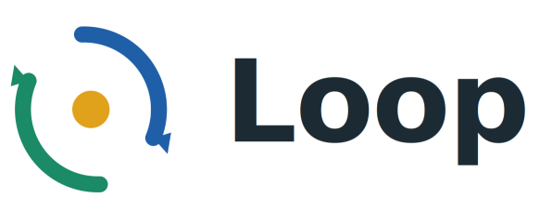
LOOP, a civic participation gateway for every EU citizen
| Authors | Team project: Andres Pereira de Luce, Fernando Andres Garcia, Madalina Bouros, Rafail Promikyridis, Sérgio Pedro, Solene Wolff, Tjerk S Boorsma |
|---|---|
| AI / tools |
DeepSeek V4 Flash (via OpenRouter) – LLM for generating and summarising civic consultation content. OpenClaw – Multi-agent orchestration framework used during development of the LOOP platform. Infisical – Secrets management for API keys across the multi-channel platform. Docker – Containerisation for reproducible deployment across development and production environments. Tailscale – Secure peer-to-peer networking connecting LOOP services. Telnyx – Voice call API for reaching citizens without smartphones via DTMF interactive menus. |
| Software | Flask, Telegram Bot API, SQLite, Caddy, GitHub Actions |
| Benefits | Reaches citizens without smartphones via voice calls; closes feedback loop |
| Potential applications | Municipalities broadening civic-consultation reach |
LOOP is an open-source civic participation gateway built for the EU Commission Civic Tech Hackathon 2026. It responds to three compounding failures named in the hackathon's own background note: consultations are fragmented across EU, national, and municipal platforms with no single point of discovery, the language they're written in is complex enough to keep participation theoretical rather than practical, and roughly 40 to 45 million EU citizens, one in ten, have no smartphone and are unreachable by any existing civic tech platform. LOOP does not replace official platforms like Decidim or Have Your Say, it makes them discoverable, understandable, and actionable through channels citizens already use.
Citizens register once, linking a phone number to a location and topic preferences, currently a lightweight mock flow standing in for a future EU Digital Identity Wallet integration, so the same architecture works for a single municipality or a nationwide rollout without changing the model. From there, LOOP proactively notifies citizens when a relevant consultation opens in their own municipality, country, or at EU level, rather than waiting for them to go looking for it.
Citizens interact through the channel that works for them: a voice call (DTMF keypad voting, no smartphone needed), or a Telegram bot with inline keyboards and AI-powered free-text opinion submission. Both channels share the same backend, a single SQLite vote database, so votes cast by phone are immediately visible in the Telegram interface and vice versa. Each consultation is presented as a four-field card: title, theme, deadline, and an AI-generated plain-language summary, with four possible responses: know more, express my opinion, vote yes, or vote no.
Every contribution triggers two things at once: an immediate, warmly worded confirmation naming the consultation and how many others have already taken part, and a one-tap shareable invitation the citizen can forward to bring someone else in. The Telegram bot sends free-text opinions to DeepSeek V4 Flash via OpenRouter for empathetic acknowledgement, and all API keys are managed through Infisical (open-source secrets manager), never hardcoded, injected at container startup. The full stack (Caddy, Docker, Flask, Telnyx, GitHub Actions) is open-source.
LOOP directly addresses the feedback loop absence identified as the primary driver of EU electoral abstention (49.3%): every vote and opinion routes to the official platform that launched the consultation, while an anonymised copy feeds a live tracking dashboard showing each consultation's status from open, to under review, to decision published, to implementation, answering the question citizens actually ask: did my participation make a difference?
The team's full vision reaches further than the two channels built for the 48-hour demo: a native RCS experience and an embedded chat bot inside WhatsApp and Signal alongside the Telegram and voice channels already working, and a website for citizens who prefer to browse. Interoperability is designed in from the start through an API and MCP layer, so any civic platform, Decidim, CONSUL, Adhocracy+, Have Your Say, can exchange participation data with any other instead of every platform building the same integration separately. Data sovereignty is a first-class design principle throughout, with the goal of citizen participation data that never leaves the jurisdiction where the participation happened. Positioned this way, LOOP is shared civic infrastructure a single municipality can deploy today, with a natural path toward adoption as a reference implementation for the future European Civic Tech Hub.
The citizen journey
From registration to tracked outcome: proactive notification, four-field card, response options, confirmation.
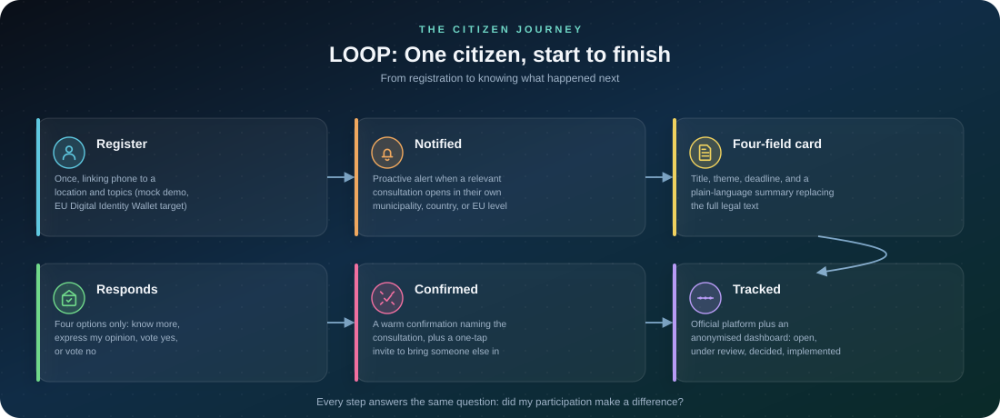
How wide the door opens
Telegram and voice working today; RCS, chatbot, and website in wider vision.
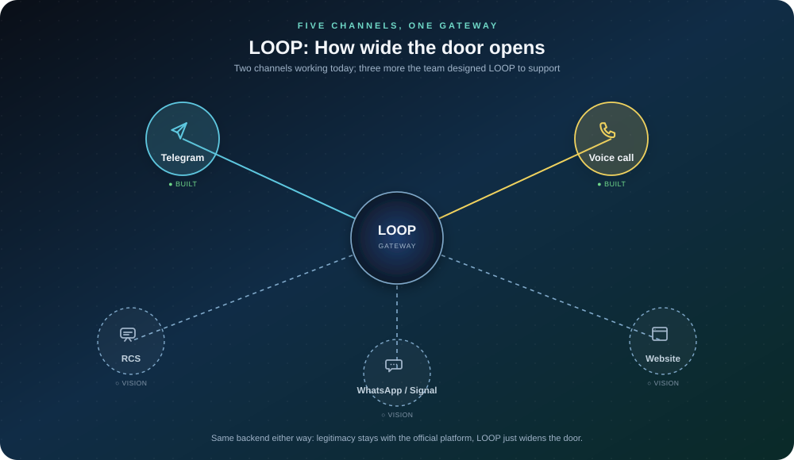
A gateway, not a new platform
LOOP connects citizens to Decidim, Have Your Say, CONSUL, and other platforms.
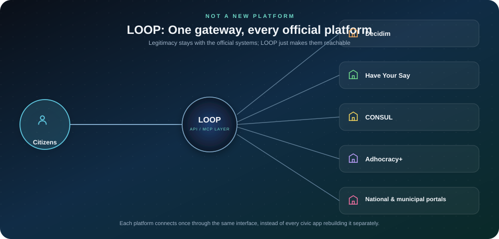
Urban livability analysis
Porto liveability index, urban liveability and democracy in Porto parishes
| Authors | Sérgio Pedro, Giovanni Allegretti, Dirk Roep |
|---|---|
| AI / tools |
Python – Index construction, z-score standardisation, and dimension weighting for the livability framework. Plotly – Interactive bar charts and comparison visualisations for parish-level data. Leaflet – Interactive map with colour-coded parish scores and hover details. QGIS – Spatial data preparation and cartographic composition. |
| Benefits | Ecocentric liveability lens revealing spatial inequality |
| Potential applications | Municipal planning, urban policy, EU cohesion |
How liveable a city is doesn't just shape day-to-day comfort, it shapes how strongly people engage in local democracy. This research reframes liveability through an ecocentric lens, moving beyond conventional indices that focus almost entirely on human convenience, and applies a modified liveability index to Porto, Portugal, at both the city and parish level.
The index combines eight dimensions: transport, culture, economy, inequality, security and pollution, environment, housing, and health, into a single score. Each dimension is first standardised (so very different units, like doctors per 1,000 people and air quality index, become comparable), then weighted by importance (environment counts most, at 20%, followed by health and security/pollution at 15% each), and finally combined into one bounded liveability score per geography. Inequality and insecurity/pollution pull the score down when they're high, since more of either makes a place less liveable.
The city-wide score shows clear room for improvement, particularly in transport, inequality, insecurity/pollution, and housing and urban regeneration, closely matching the municipality's own priorities, such as chronic traffic congestion and the air and noise pollution that comes with it. At the parish level, the two city-centre parishes, Cedofeita/Santo Ildefonso/Sé/Miragaia/São Nicolau/Vitória and Lordelo do Ouro e Massarelos, score highest, mainly because they concentrate far more shops, businesses and cultural venues than the rest of the city.
For decision-makers, an eight-dimension breakdown is more actionable than a single liveability number. Municipal planning departments can target the specific weak dimension in each parish (transport in one, housing in another) rather than applying a citywide blanket policy that overspends where it isn't needed. EU cohesion-policy stakeholders get a comparable, multi-dimensional basis for allocating funds across parishes, instead of relying on a single proxy metric that hides where the real gap is.
Interactive Porto map
Parish-level liveability scores with pan, zoom and hover.
Key findings
Parish ranking with scores and dimension breakdown.
OpenClaw pipeline
Multi-agent infrastructure
OpenClaw pipeline - Multi-agent infrastructure for competitive intelligence
| Author | Sérgio Pedro |
|---|---|
| AI / tools |
OpenClaw – Multi-agent orchestration framework for managing autonomous AI agents. browser-use – Agent-based browser navigation for extracting data from web sources. Playwright – Browser automation for reliable page interaction and data extraction. n8n – Workflow automation orchestrating data collection, processing, and notifications. Tavily – AI-powered search API for gathering relevant web content. Tailscale – Secure peer-to-peer networking connecting all pipeline services. Docker – Containerisation for isolated, reproducible agent runtimes. Infisical – Secrets management across the pipeline infrastructure. |
| Benefits | Automated multi-source competitive intelligence gathering |
| Potential applications | Market research, competitor monitoring, price tracking |
This is a multi-agent pipeline for automated competitive intelligence and opportunity monitoring, built on OpenClaw. Browser-use agents navigate and extract data directly from web sources, a dedicated calls bot continuously scrapes open calls for funding grants, prizes, competitions, and courses across dozens of sources, and n8n orchestrates the full workflow end to end, from collection through processing to notification and reporting.
The system runs autonomously around the clock, combining scheduled runs with event-driven triggers so new opportunities and signals surface without anyone checking a source manually. Independent fallback chains keep individual agents running even when a specific source or API is temporarily unavailable.
For a business, the value is in what this replaces: continuous, structured monitoring that would otherwise require someone manually checking dozens of sources every day. The same agent architecture applies well beyond this specific use case, to any business that needs ongoing competitive intelligence, opportunity discovery, or market monitoring without adding manual research overhead.
System architecture
How the multi-agent system works end-to-end.
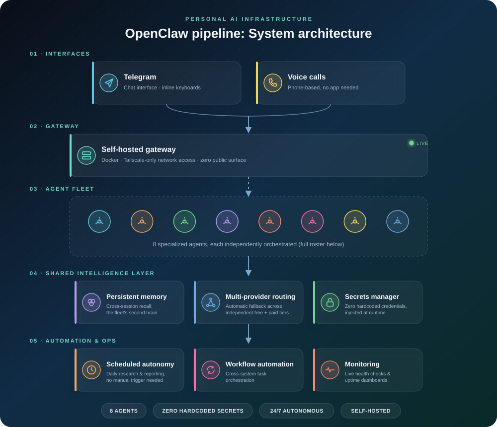
Autonomous agents
The fleet of agents that run daily operations.
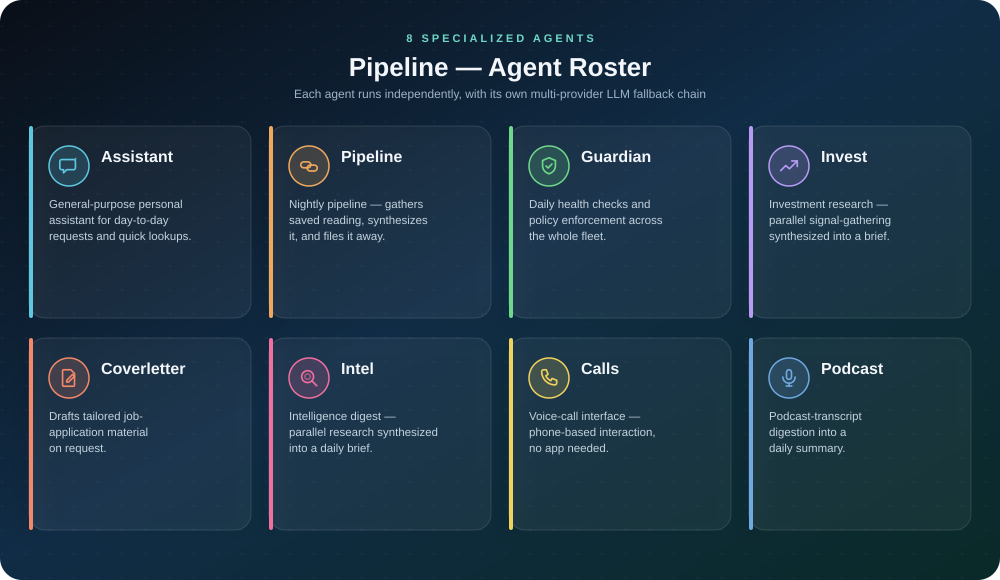
Anatomy of a request
How a task moves through the pipeline.
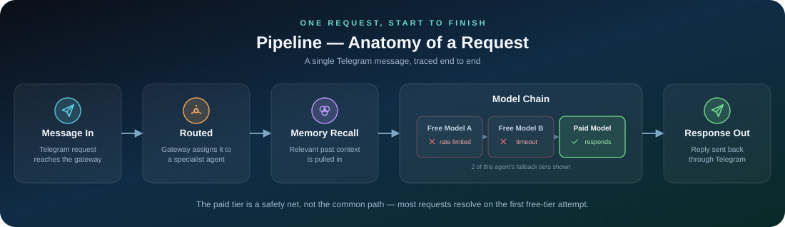
24-hour autonomy
Timeline of scheduled and event-driven runs.
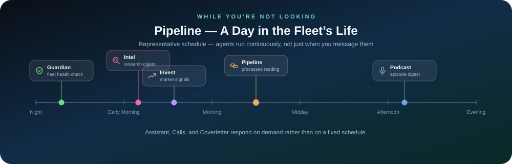
Resilience model
Independent fallback chains keep the system running.
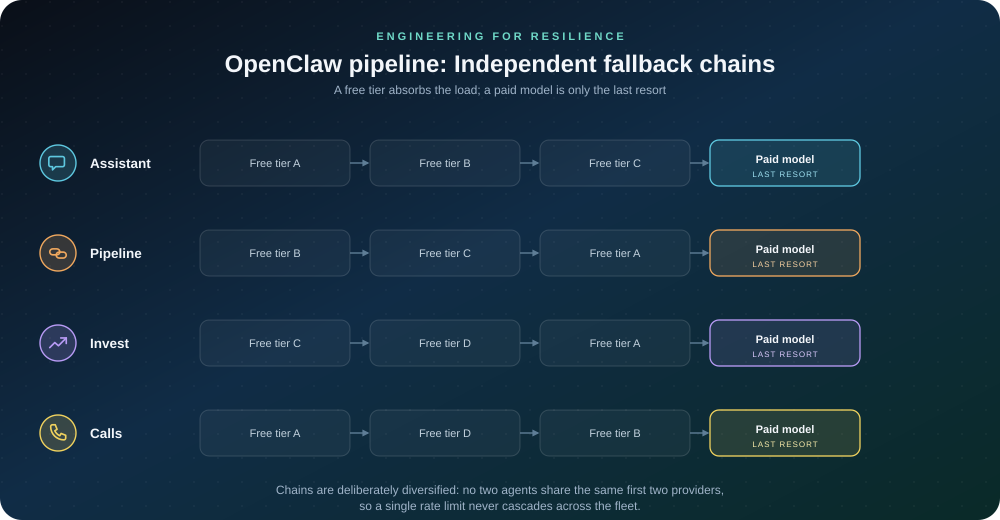
n8n pipeline
Workflow automation
n8n workflow automation for data collection and processing
| Author | Sérgio Pedro |
|---|---|
| AI / tools |
n8n – Workflow automation for scheduling and orchestrating data collection pipelines. Python – Custom data transformation and API integration scripts within workflows. SQLite – Embedded database for storing collected data and workflow outputs. Notion API – Integration for structured data storage and reporting. RapidAPI – Access to third-party data sources and API connectors. |
| Benefits | Automated data collection and processing workflows |
| Potential applications | Data pipeline automation, ETL, notification systems |
This project orchestrates scheduled and hourly data-collection runs across multiple job-board and API sources using n8n, tracing each listing from initial discovery through normalisation into SQLite, then syncing structured results into Notion for review and reporting. Custom Python steps handle transformation and API integration wherever a source needs more than a standard connector.
The same orchestration pattern generalises well beyond job discovery, to any recurring data-collection need a business has: competitor pricing, lead lists, market listings, or any other source that changes often enough to need continuous monitoring. It removes the manual collection work entirely and replaces scattered manual exports with a single, queryable, always-current dataset.
System architecture
How the n8n workflows connect to data sources and outputs.
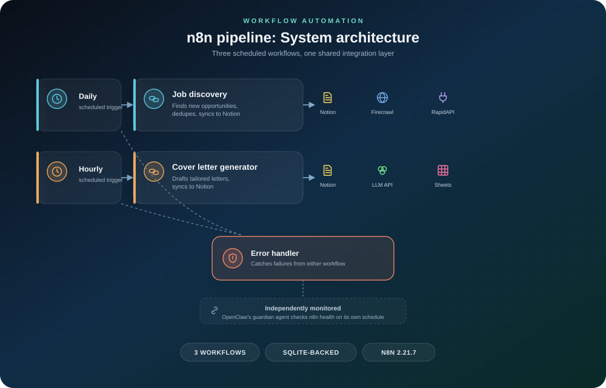
Schedule
Daily and hourly scheduled runs.
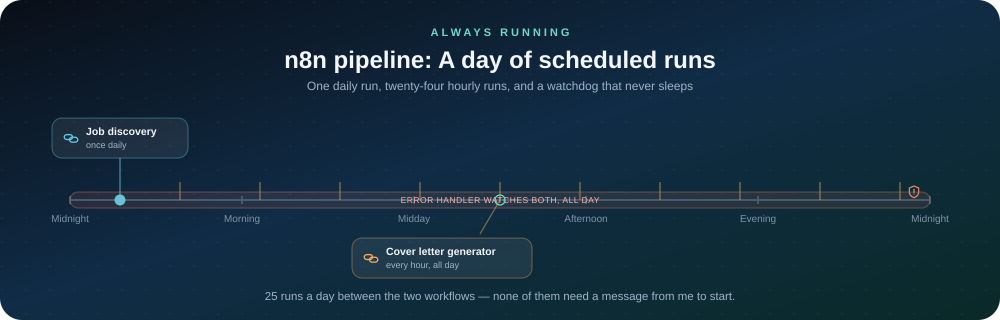
Data flow
One job posting traced end to end.
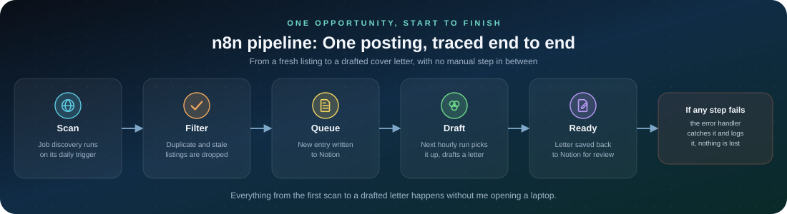
Interactive Municipal GIS Explorer
A multi-layer civic-participation and infrastructure GIS explorer for a Portuguese municipality
| Author | Sérgio Pedro |
|---|---|
| AI / tools |
Leaflet.js + JavaScript – Multi-layer client-side rendering, filtering, and marker clustering at scale. Python + GeoPandas – GIS data pipeline normalising shapefiles and live REST feeds into one schema. GitHub Actions – Automated, scheduled multi-source fetch-and-deploy pipeline. |
| Benefits | 28 independently toggleable GIS layers plus real-time participant search and filtering, in a single dependency-light map with no backend server |
| Potential applications | Municipal GIS teams, EU-funded civic-participation programmes, field-operations and asset-tracking teams, retail or real-estate site selection, sales-territory mapping |
This is an interactive map built for MOVES-IT, an EU Urban Innovative Actions project run by the Matosinhos City Council, combining a live civic-participation dataset with the municipality's own open GIS data. Visitors can search and filter participants by parish, then layer in any combination of 28 independent thematic overlays, spanning municipal boundaries, social housing, green space, education and health facilities, culture and heritage, and mobility infrastructure, each sourced from a mix of committed shapefiles and the municipality's live ArcGIS feeds.
Two pieces of the underlying engineering generalise well beyond this one map. First, a point-in-polygon geographic resolver (a ray-casting even-odd algorithm implemented from scratch) derives each point's administrative parish directly from real boundary geometry, rather than trusting a possibly stale stored label, and a deterministic z-order rule keeps wide "context" polygons from ever occluding more specific layers regardless of the order they're toggled on. Second, a scheduled CI/CD data pipeline fetches from a dozen-plus live REST/ArcGIS endpoints and local geodata files on every deploy, normalises them into one client-side schema, and fails soft, so one unreachable source degrades a single layer instead of breaking the map.
The same architecture, heterogeneous sources merged into one schema, geospatial computation done client-side, and a dense multi-layer UI kept fast through clustering and lazy rendering, applies well beyond civic participation. Utilities and telecom field-operations teams can plot assets and incidents across overlapping data sources the same way; retail and real-estate analysts can overlay demographic, competitor, and zoning layers to inform site selection; sales organisations can build territory maps from CRM data; and any team doing ESG or compliance reporting gets the same pattern for combining regulatory geodata with their own operational footprint.
Interactive map
Participant markers, parish filtering, and 28 toggleable GIS layers. Participant names are anonymized for this public copy.